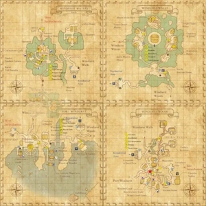

Level 75 reference · Zenith rules
|
 |

Walkthrough
- Talk to Ibwam who will give you a Green Sentinel Badge and ask you to find new recruits for a mercenary group in Aht Urhgan.
- Check the badge to get coordinates for the people you should talk to in each area.
- You will know you've found the right person because you get an emote message: "[ ]'s badge flashes brightly."
- After you talk to all of the people for Windurst, return to Ibwam to receive a Green Invitation Card (key item).
- Note on teleportation: If you have not completed Aht Urhgan mission 2 to enlist as a mercenary, you will not be able to teleport using this NPC
- You will need to talk to:
- Windurst Woods (South to North)
- (J-13) Etsa Rhuyuli (Auction House 2nd floor)
- (H-10) Soni-Muni (Bomingo Round, under the tree)
- (I-10) Cayu Pensharhumi (path west of Leviathan's Gate)
- (I-5) Umumu (Mithra Groves)
- (J-3) Nanaa Mihgo (Mithra Groves)
- Windurst Walls (Counter-clockwise)
- (J-11) Yoriri (on top of the Auction House)
- (K-7) Shantotto (Shantotto's Manor)
- (J-6) Moan-Maon (just west of the Consulate of Jeuno)
- (H-3) Chomomo (East of the House of the Hero / North path from Gerun-Garun)
- (F-5) Naih Arihmepp (wanders along the path by Yoran-Oran's Manor)
- Windurst Waters (All NPCs in North Waters) (North to South)
- (G-4) Npopo (right by the gate to Sarutabaruta)
- (F-8) Lago-Charago (on top of the Optistery)
- (G-9) Amagusa-Chigurusa (in the Huntsman's Court area)
- (F-9) Funpo-Shipo (walks along the path outside Timbre Timbers Tavern, on the north side)
- (F-10) Kyume-Romeh (downstairs in the Timbre Timber Tavern)
- Port Windurst (West to East)
- (E-7) Kunchichi (a magic-caster inside the Orastery)
- (E-7) Yaman-Hachuman (inside the Orastery)
- (F-6) Choyi Totlihpa (east of Fishmonger Landing)
- (G-7) Three of Clubs (by the dock/pier)
- (M-6) Yujuju (outside the Air Travel Agency)
Once the quest is complete, you can warp to Aht Urhgan Whitegate by trading the quest starter 300 gil. Just doing this quest alone will not gain you access to Whitegate. You must do a quest in Jeuno and a quest in Tenshodo before this access will work.
Before you leave Whitegate for the 1st time, be sure to complete the second mission Aht Urhgan Mission 2: Immortal Sentries or you will have to take the ferry again...
Game Description
Client: Ibwam (Bomingo Round, Windurst Woods)
Summary:
- The mercenary company "Salaheem's Sentinels" has asked you to help recruit new members.
Adapted from Eden Wiki: Lure of the Wildcat (Windurst) · Contributors and history · CC BY-SA 4.0. Revision 44601. Layout, links and optional background text adapted for Zenith.